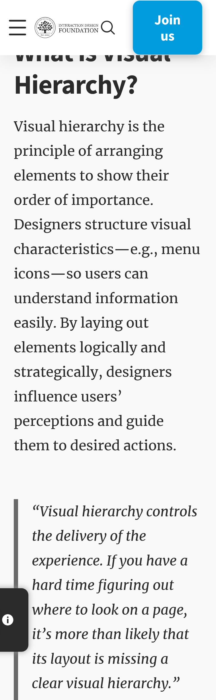
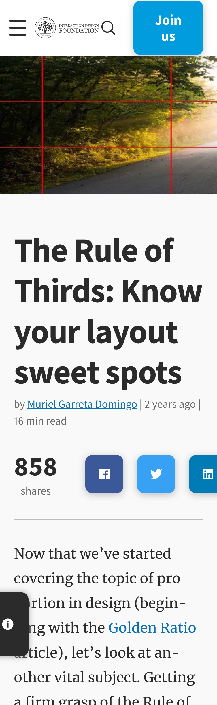

Hick's Law
Interaction Design FoundationHick's Law or Hick-Hyman Law is a psycological test to test your stimuli. They are seeing if you have less options if you can make a quicker decision or if having more options will. They determined that the fewer the option you have unless you have a decision before viewing it will be quicker no matter if there are more or less choices. If there are less choices they can make a quicker decision the more choice it may also make them not make one because it is to overwhelming.
Visual Hierarchy
Interaction Design Foundation As it sounds with visual hierarchy you want the first thing you see the most important thing that you see. Working your way down to the least important thing.The most important thing to see may not even been your logo it might be what you are trying to sell or have people see that needs to been seen first.
Rule of Thirds
Interatction Design Foundation The rules of thirds is also applied to things like art and photography. Just like those a website is the same art we see things with our eyes and see if it is appealing or not and we scan using a grid system basicly from the top left as the majority of it to the right and cinter the least we look would be the bottom right expecially when looking at a website because we know what we are looking at is in the dead center.